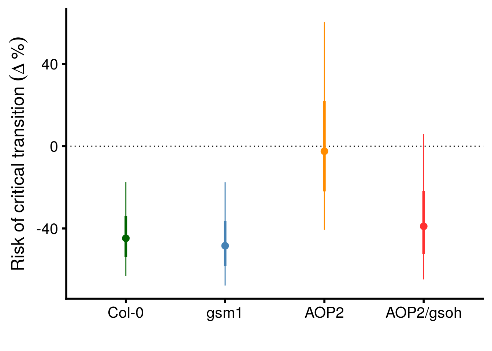
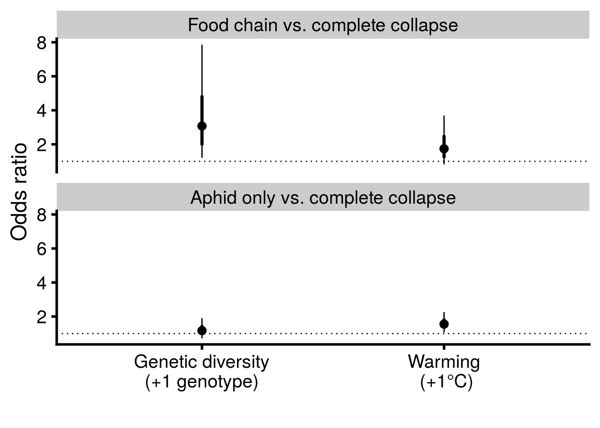

Last updated: 2020-06-22
Checks: 6 1
Knit directory: genes-to-foodweb-stability/
This reproducible R Markdown analysis was created with workflowr (version 1.6.0). The Checks tab describes the reproducibility checks that were applied when the results were created. The Past versions tab lists the development history.
The R Markdown is untracked by Git. To know which version of the R Markdown file created these results, you’ll want to first commit it to the Git repo. If you’re still working on the analysis, you can ignore this warning. When you’re finished, you can run wflow_publish to commit the R Markdown file and build the HTML.
Great job! The global environment was empty. Objects defined in the global environment can affect the analysis in your R Markdown file in unknown ways. For reproduciblity it’s best to always run the code in an empty environment.
The command set.seed(20200205) was run prior to running the code in the R Markdown file. Setting a seed ensures that any results that rely on randomness, e.g. subsampling or permutations, are reproducible.
Great job! Recording the operating system, R version, and package versions is critical for reproducibility.
Nice! There were no cached chunks for this analysis, so you can be confident that you successfully produced the results during this run.
Great job! Using relative paths to the files within your workflowr project makes it easier to run your code on other machines.
Great! You are using Git for version control. Tracking code development and connecting the code version to the results is critical for reproducibility. The version displayed above was the version of the Git repository at the time these results were generated.
Note that you need to be careful to ensure that all relevant files for the analysis have been committed to Git prior to generating the results (you can use wflow_publish or wflow_git_commit). workflowr only checks the R Markdown file, but you know if there are other scripts or data files that it depends on. Below is the status of the Git repository when the results were generated:
Ignored files:
Ignored: .Rhistory
Ignored: .Rproj.user/
Ignored: analysis/structural-stability_cache/
Ignored: code/.Rhistory
Untracked files:
Untracked: analysis/critical-transitions.Rmd
Untracked: analysis/plant-growth-no-insects.Rmd
Untracked: analysis/structural-stability.Rmd
Untracked: code/glm-ftest.R
Untracked: code/plot-feasibility-domain.R
Untracked: code/prep-time-series.R
Untracked: code/simulate-community-dynamics.R
Untracked: code/temperature-structural-stability-fig.R
Untracked: data/ExperimentPlantBiomass.csv
Untracked: data/PreExperimentNoInsectsPlantBiomass.csv
Untracked: data/arabidopsis_clean_df.csv
Untracked: figures/
Untracked: morgue/
Untracked: output/critical-transitions.RData
Untracked: output/full.mv.norm.brm.rds
Untracked: output/geno.rich_model.brm.rds
Untracked: output/plant-growth-no-insects.RData
Untracked: output/reduced.1.brm.rds
Untracked: output/reduced.2.brm.rds
Untracked: output/reduced.3.brm.rds
Untracked: output/reduced.4.brm.rds
Untracked: output/reduced.5.brm.rds
Untracked: output/reduced.6.brm.rds
Untracked: output/reduced.7.brm.rds
Untracked: output/reduced.8.brm.rds
Untracked: output/structural-stability.RData
Untracked: output/timeseries_df.csv
Unstaged changes:
Modified: analysis/index.Rmd
Modified: code/README.md
Modified: data/README.md
Modified: output/README.md
Note that any generated files, e.g. HTML, png, CSS, etc., are not included in this status report because it is ok for generated content to have uncommitted changes.
There are no past versions. Publish this analysis with wflow_publish() to start tracking its development.
# Load and manage data
df <- read_csv("data/arabidopsis_clean_df.csv") %>%
# renaming for brevity
rename(cage = Cage,
com = Composition,
week = Week,
temp = Temperature,
rich = Richness) %>%
mutate(cage = as.character(cage),
fweek = factor(ifelse(week < 10, paste("0", week, sep=""), week)),
temp = ifelse(temp=="20 C", 0, 1)) %>%
arrange(cage, week)
# create data for multi-state survival analysis
state_df <- df %>%
# counter information is not relevant (because it is the same), so we summarise across it
group_by(cage, fweek, week, temp, rich, Col, gsm1, AOP2, AOP2.gsoh, com) %>%
summarise_at(vars(BRBR_Survival, LYER_Survival, Mummy_Ptoids_Survival), list(mean)) %>%
ungroup() %>%
# create possible food-web states
mutate(BRBR = ifelse(BRBR_Survival == 1, "BRBR", ifelse(BRBR_Survival == 0, "0", NA)),
LYER = ifelse(LYER_Survival == 1, "LYER", ifelse(LYER_Survival == 0, "0", NA)),
Ptoid = ifelse(Mummy_Ptoids_Survival == 1, "Ptoid", ifelse(Mummy_Ptoids_Survival == 0, "0", NA))) %>%
mutate(state = paste(BRBR, LYER, Ptoid, sep = "-"),
cage = as.character(cage)) %>%
# these variables are no longer needed
select(-BRBR, -LYER, -Ptoid) %>%
# remove all instances where all species have been labelled extinct for more than 1 week "NA-NA-NA".
# also, only keep observations after 2 weeks when we added the parasitoid (full community)
filter(state != "NA-NA-NA", week > 2) %>%
mutate(week_since = week - 2)
# replace NA with zeros for state variable
state_df$state <- gsub("NA","0", state_df$state)
# everything appears in order
arrange(state_df, cage, week_since) %>% select(cage, week_since, BRBR_Survival, LYER_Survival, Mummy_Ptoids_Survival, state) # A tibble: 710 x 6
cage week_since BRBR_Survival LYER_Survival Mummy_Ptoids_Surviv… state
<chr> <dbl> <dbl> <dbl> <dbl> <chr>
1 1 1 1 1 1 BRBR-LYER-…
2 1 2 1 1 1 BRBR-LYER-…
3 1 3 1 1 1 BRBR-LYER-…
4 1 4 1 1 1 BRBR-LYER-…
5 1 5 0 0 1 0-0-Ptoid
6 1 6 NA NA 0 0-0-0
7 10 1 1 1 1 BRBR-LYER-…
8 10 2 1 1 1 BRBR-LYER-…
9 10 3 1 1 1 BRBR-LYER-…
10 10 4 1 1 1 BRBR-LYER-…
# … with 700 more rows# source in useful functions for analyses
source('code/glm-ftest.R') # ANOVA GLM
delta_prob = function(x) round(exp(x) - 1,2) # change in probability of transtion from discrete-time survival analysisLet’s look at the possible state transitions for all cages and time points
# state transitions for all cages and time points
msm::statetable.msm(state = state, subject = cage, data = state_df) to
from 0-0-0 0-0-Ptoid 0-LYER-0 0-LYER-Ptoid BRBR-LYER-Ptoid
0-0-Ptoid 22 7 0 0 0
0-LYER-0 1 0 131 0 0
0-LYER-Ptoid 5 12 26 242 0
BRBR-LYER-Ptoid 0 10 0 50 144The most common transition from the full community BRBR-LYER-Ptoid is to lose BRBR 0-LYER-Ptoid and less common to collapse by losing both aphids 0-0-Ptoid. The 0-0-Ptoid state never lasts long, since the parasitoid no longer has any resources, and collapses to 0-0-0.
From the 0-LYER-Ptoid community, losing the parasitoid 0-LYER-0 is the most common transition, but losing LYER 0-0-Ptoid is also common. Note that transitions to complete collapse 0-0-0 were more than likely to occur by losing LYER then the parasitoid, rather than losing the parasitoid and then LYER. This is because collapsing from the 0-LYER-0 state is rare (1 / (131 + 1) = 0.7575758% chance per week).
These transition patterns suggest the following:
0-0-Ptoid state always collapses to 0-0-0, I’m going to convert the 0-0-Ptoid state into 0-0-0. This will reduce the number of state transitions I need to model, but it won’t sacrifice modeling the biological process.0-LYER-0 to 0-0-0 transition is so rare, it does not make sense to model this transition with any covariates.Below, we reproduce the analysis of deviance for discrete-time survival models presented in Tables S1-S2 in the Supplementary Material.
# filter data
full_transit_df <- state_df %>%
# removes all transitions after the first one, this focuses
# on transition from the full community
na.omit() # check for weekly variation in critical transitions.
full_transit_df %>%
mutate(CT_from_full = ifelse(state %in% c("0-LYER-Ptoid","0-0-Ptoid"), 1, 0)) %>%
group_by(fweek) %>%
summarise_at("CT_from_full", mean)# A tibble: 7 x 2
fweek CT_from_full
<fct> <dbl>
1 03 0
2 04 0.0833
3 05 0.127
4 06 0.333
5 07 0.75
6 08 0.875
7 09 1 We only observe variation between weeks 4 and 8, so we restrict the data to those weeks for the analysis. It does not make sense to include weeks where there is no variation. If we did, then the factor fweek would cause predict all of the variation in the week with no variation.
# filter data again
full_transit_df <- filter(full_transit_df, week %in% c(4:8))# adjust rich and temp so coefficients = +1 genotype and +1 C, respectively
full_transit_df <- full_transit_df %>%
mutate(rich = rich - 1,
temp = temp * 3)Now we’ve put the coefficients on a similar and more intuitive scale with respect to each other.
full_any_glmf <- glm.ftest.v2(
model = glm(data = full_transit_df,
family = quasibinomial(link = "cloglog"),
formula = terms(state %in% c("0-LYER-Ptoid","0-0-Ptoid") ~
fweek + temp + rich + com + temp:rich + temp:com,
keep.order = T)),
test.formula = list(
c("fweek","Residuals"),
c("temp","temp:com"),
c("rich","com"),
c("temp:rich","temp:com"))
)[[3]] %>%
select(Source = treatment,
`df (Source)` = num_df,
`df (Error)` = den_df,
Deviance = deviance,
`Mean Deviance` = mean_deviance,
F = F, P = P, Error = error) Warning: glm.fit: algorithm did not convergefull_any_glmf %>%
kable(., caption = "Analysis of deviance for critical transition from initial food web.", booktabs = T) %>%
kable_styling(latex_options = c("striped", "hold_position"))| Source | df (Source) | df (Error) | Deviance | Mean Deviance | F | P | Error |
|---|---|---|---|---|---|---|---|
| fweek | 4 | 177 | 65.23 | 16.31 | 20.854 | <0.001 | Residuals |
| temp | 1 | 9 | 14.81 | 14.81 | 11.132 | 0.009 | temp:com |
| rich | 1 | 9 | 2.18 | 2.18 | 1.713 | 0.223 | com |
| temp:rich | 1 | 9 | 0.66 | 0.66 | 0.498 | 0.498 | temp:com |
The model didn’t converge…Let’s try the standard link = "logit".
glm.ftest.v2(
model = glm(data = full_transit_df,
family = quasibinomial(link = "logit"),
formula = terms(state %in% c("0-LYER-Ptoid","0-0-Ptoid") ~
fweek + temp + rich + com + temp:rich + temp:com,
keep.order = T)),
test.formula = list(
c("fweek","Residuals"),
c("temp","temp:com"),
c("rich","com"),
c("temp:rich","temp:com"))
)[[3]] %>%
select(Source = treatment,
`df (Source)` = num_df,
`df (Error)` = den_df,
Deviance = deviance,
`Mean Deviance` = mean_deviance,
F = F, P = P, Error = error) Source df (Source) df (Error) Deviance Mean Deviance F P
1 fweek 4 177 65.23 16.31 21.197 <0.001
2 temp 1 9 21.87 21.87 18.402 0.002
3 rich 1 9 0.84 0.84 0.793 0.396
4 temp:rich 1 9 0.42 0.42 0.354 0.566
Error
1 Residuals
2 temp:com
3 com
4 temp:comEverything converges now and the results are qualitatively the same as when link = "cloglog". To maintain consistency with the other models, I report the results from link = "cloglog".
# check for weekly variation in critical transitions.
full_transit_df %>%
mutate(CT_to_0LYERPtoid = ifelse(state %in% "0-LYER-Ptoid", 1, 0)) %>%
group_by(week) %>%
summarise_at("CT_to_0LYERPtoid", mean)# A tibble: 5 x 2
week CT_to_0LYERPtoid
<dbl> <dbl>
1 4 0.0833
2 5 0.127
3 6 0.333
4 7 0.5
5 8 0.75 We keep the full_transit_df since we observe variation in all weeks.
# fit ANOVA GLM
full_LP_glmf <- glm.ftest.v2(
model = glm(data = full_transit_df,
family = quasibinomial(link = "cloglog"),
formula = state %in% c("0-LYER-Ptoid") ~
fweek + temp + rich + com + temp:rich + temp:com),
test.formula = list(
c("fweek","Residuals"),
c("temp","temp:com"),
c("rich","com"),
c("temp:rich","temp:com"))
)[[3]] %>%
select(Source = treatment,
`df (Source)` = num_df,
`df (Error)` = den_df,
Deviance = deviance,
`Mean Deviance` = mean_deviance,
F = F, P = P, Error = error)
# table of results
full_LP_glmf %>%
kable(., caption = "Analysis of Deviance for critical transition from initial food web to food chain with dominant aphid and parasitoid.", booktabs = T) %>%
kable_styling(latex_options = c("striped", "hold_position"))| Source | df (Source) | df (Error) | Deviance | Mean Deviance | F | P | Error |
|---|---|---|---|---|---|---|---|
| fweek | 4 | 177 | 35.83 | 8.96 | 10.916 | <0.001 | Residuals |
| temp | 1 | 9 | 20.19 | 20.19 | 11.202 | 0.009 | temp:com |
| rich | 1 | 9 | 0.38 | 0.38 | 0.407 | 0.539 | com |
| temp:rich | 1 | 9 | 0.38 | 0.38 | 0.210 | 0.658 | temp:com |
# calculate effects sizes for temp, Fig. 2 of main text
conf_int(
glm(data = full_transit_df,
family = quasibinomial(link = "cloglog"),
formula = state %in% c("0-LYER-Ptoid") ~
fweek + temp),
vcov = "CR2",
test = "naive-t",
cluster = with(full_transit_df, paste(temp, com)),
coefs = "temp"
) %>%
data.frame() %>%
rownames_to_column(var = "term") %>%
summarise_at(vars(beta), list(delta_prob = delta_prob)) delta_prob
1 0.59# calculate effects sizes for rich, Fig. 2 of main text
conf_int(
glm(data = full_transit_df,
family = quasibinomial(link = "cloglog"),
formula = state %in% c("0-LYER-Ptoid") ~
fweek + temp + rich),
vcov = "CR2",
test = "naive-t",
cluster = full_transit_df$com,
coefs = "rich"
) %>%
data.frame() %>%
rownames_to_column(var = "term") %>%
summarise_at(vars(beta), list(delta_prob = delta_prob)) delta_prob
1 -0.09# check for weekly variation in critical transitions.
full_transit_df %>%
mutate(CT_to_00Ptoid = ifelse(state %in% "0-0-Ptoid", 1, 0)) %>%
group_by(week) %>%
summarise_at("CT_to_00Ptoid", mean)# A tibble: 5 x 2
week CT_to_00Ptoid
<dbl> <dbl>
1 4 0
2 5 0
3 6 0
4 7 0.25
5 8 0.125We only see variation in weeks 7 and 8, so we restrict the data to those weeks.
# check frequency of critical transitions
with(filter(full_transit_df, week %in% 7:8), table(state %in% c("0-0-Ptoid")))
FALSE TRUE
31 9 And since there were only 9 total transitions to this state, we don’t attempt to fit the interaction term temp:rich.
glm.ftest.v2(
model = glm(data = filter(full_transit_df, week %in% 7:8),
family = quasibinomial(link = "cloglog"),
formula = state %in% c("0-0-Ptoid") ~
fweek + temp + rich + com + temp:com),
test.formula = list(
c("fweek","Residuals"),
c("temp","temp:com"),
c("rich","com"))
)[[3]] %>%
select(Source = treatment,
`df (Source)` = num_df,
`df (Error)` = den_df,
Deviance = deviance,
`Mean Deviance` = mean_deviance,
F = F, P = P, Error = error) %>%
kable(., caption = "Analysis of deviance for critical transition from initial food web to extinction of all species.", booktabs = T) %>%
kable_styling(latex_options = c("striped", "hold_position"))| Source | df (Source) | df (Error) | Deviance | Mean Deviance | F | P | Error |
|---|---|---|---|---|---|---|---|
| fweek | 1 | 21 | 0.64 | 0.64 | 0.631 | 0.436 | Residuals |
| temp | 1 | 6 | 0.93 | 0.93 | 1.056 | 0.344 | temp:com |
| rich | 1 | 9 | 0.42 | 0.42 | 0.262 | 0.621 | com |
# calculate effects sizes for temp, Fig. 2 of main text
conf_int(
glm(data = filter(full_transit_df, week %in% 7:8),
family = quasibinomial(link = "cloglog"),
formula = state %in% c("0-0-Ptoid") ~
fweek + temp),
vcov = "CR2",
test = "naive-t",
cluster = with(filter(full_transit_df, week %in% 7:8), paste(temp, com)),
coefs = "temp"
) %>%
data.frame() %>%
rownames_to_column(var = "term") %>%
summarise_at(vars(beta), list(delta_prob = delta_prob)) delta_prob
1 -0.26# calculate effects sizes for rich, Fig. 2 of main text
conf_int(
glm(data = filter(full_transit_df, week %in% 7:8),
family = quasibinomial(link = "cloglog"),
formula = state %in% c("0-0-Ptoid") ~
fweek + temp + rich),
vcov = "CR2",
test = "naive-t",
cluster = filter(full_transit_df, week %in% 7:8)$com,
coefs = "rich"
) %>%
data.frame() %>%
rownames_to_column(var = "term") %>%
summarise_at(vars(beta), list(delta_prob = delta_prob)) delta_prob
1 -0.22## Organize data for analysis
# LYER-Ptoid cages at least at one time point
LP_cages <- unique(filter(state_df, state == "0-LYER-Ptoid")$cage)
# should be 50 cages, and it is
length(LP_cages)[1] 50# filter and manage data
LP_transit_df <- state_df %>%
filter(cage %in% LP_cages, state != "BRBR-LYER-Ptoid") %>%
# omit BRBR from consideration
select(-BRBR_Survival) %>%
# omit rows where we already know either LYER or Ptoid went extinct
na.omit() %>%
mutate(# assume these two states are the same, i.e. to get to 0-0-0, had to go through 0-0-Ptoid
state_adj = ifelse(state %in% c("0-0-Ptoid","0-0-0"), "0-0-Ptoid", state))
# confirm levels
unique(LP_transit_df$state_adj) #fstate)[1] "0-LYER-Ptoid" "0-LYER-0" "0-0-Ptoid" # check for weekly variation in critical transitions
LP_transit_df %>%
mutate(CT_from_FoodChain = ifelse(state_adj %in% c("0-0-Ptoid","0-LYER-0"), 1, 0)) %>%
group_by(fweek) %>%
summarise_at("CT_from_FoodChain", mean)# A tibble: 14 x 2
fweek CT_from_FoodChain
<fct> <dbl>
1 04 0
2 05 0
3 06 0
4 07 0.136
5 08 0.205
6 09 0.143
7 10 0.1
8 11 0.0370
9 12 0.0769
10 13 0.0833
11 14 0.136
12 15 0.368
13 16 0.417
14 17 0 We only observe variation between weeks 7 and 16, so we restrict the data to those weeks for the analysis.
LP_transit_df <- filter(LP_transit_df, week %in% c(7:16))# adjust rich and temp coefficients, so +1 genotype corresponds to +1 C
LP_transit_df <- LP_transit_df %>%
mutate(rich = rich-1,
temp = temp*3)with(LP_transit_df, table(state_adj))state_adj
0-0-Ptoid 0-LYER-0 0-LYER-Ptoid
17 26 240 # fit ANOVA glm
LP_any_glmf <- glm.ftest.v2(
model = glm(data = LP_transit_df,
family = quasibinomial(link = "cloglog"),
formula = state_adj %in% c("0-LYER-0","0-0-Ptoid") ~
fweek + temp + rich + com + temp:rich + temp:com),
test.formula = list(
c("fweek","Residuals"),
c("temp","temp:com"),
c("rich","com"),
c("temp:rich","temp:com"))
)[[3]] %>%
select(Source = treatment,
`df (Source)` = num_df,
`df (Error)` = den_df,
Deviance = deviance,
`Mean Deviance` = mean_deviance,
F = F, P = P, Error = error)
# table of results
LP_any_glmf %>%
kable(., caption = "Analysis of deviance for critical transition from food chain.", booktabs = T) %>%
kable_styling(latex_options = c("striped", "hold_position"))| Source | df (Source) | df (Error) | Deviance | Mean Deviance | F | P | Error |
|---|---|---|---|---|---|---|---|
| fweek | 9 | 252 | 18.05 | 2.01 | 2.544 | 0.008 | Residuals |
| temp | 1 | 9 | 0.01 | 0.01 | 0.005 | 0.946 | temp:com |
| rich | 1 | 9 | 5.32 | 5.32 | 9.006 | 0.015 | com |
| temp:rich | 1 | 9 | 0.85 | 0.85 | 0.592 | 0.461 | temp:com |
# rich effect sizes reported in Fig. 3A of main text
rich_HR_CI <- conf_int(
glm(data = LP_transit_df,
family = binomial(link = "cloglog"),
formula = state_adj %in% c("0-LYER-0","0-0-Ptoid") ~ fweek + temp + rich),
vcov = "CR2",
test = "naive-t",
coefs = "rich",
cluster = LP_transit_df$com) %>%
data.frame() %>%
rownames_to_column(var = "term")
# genotype-specific effects sizes reported in Fig. 3B of main text
geno_HR_CI <- conf_int(
glm(data = LP_transit_df,
family = binomial(link = "cloglog"),
formula = state_adj %in% c("0-LYER-0","0-0-Ptoid") ~ fweek + temp + Col + gsm1 + AOP2 + AOP2.gsoh), # fstate
vcov = "CR2",
test = "naive-t",
coefs = c("Col","gsm1","AOP2","AOP2.gsoh"),
cluster = LP_transit_df$com) %>%
data.frame() %>%
rownames_to_column(var = "term")
# reproduce Fig. 3B in main text
geno_HR_CI %>%
mutate(term = factor(term,
levels = c("Col","gsm1","AOP2","AOP2.gsoh"))) %>%
ggplot(aes(x = term, y = (exp(beta)-1)*100, color = term)) +
geom_point(size = 3) +
geom_hline(yintercept = 0, linetype = "dotted") +
geom_linerange(aes(ymax = (exp(CI_U)-1)*100, ymin = (exp(CI_L)-1)*100)) +
geom_linerange(aes(ymin = (exp(beta - SE)-1)*100, ymax = (exp(beta + SE)-1)*100), size = 1.25) +
scale_y_continuous(name = expression("Risk of critical transition "(Delta~"%"))) +
scale_x_discrete(labels = c("Col-0","gsm1","AOP2","AOP2/gsoh")) +
scale_color_manual(values = c("darkgreen","steelblue","darkorange","firebrick1"), guide = F) +
xlab("") +
theme_cowplot(font_size = 18, line_size = 1)
ggsave("figures/rich-geno-critical-transition-v4.pdf", width = 8, height = 8, units = "in")# check for weekly variation in critical transitions
LP_transit_df %>%
mutate(CT_FoodChain_to_00Ptoid = ifelse(state_adj == c("0-0-Ptoid"), 1, 0)) %>%
group_by(week) %>%
summarise_at("CT_FoodChain_to_00Ptoid", mean)# A tibble: 10 x 2
week CT_FoodChain_to_00Ptoid
<dbl> <dbl>
1 7 0.114
2 8 0.136
3 9 0
4 10 0
5 11 0
6 12 0
7 13 0
8 14 0
9 15 0.211
10 16 0.167Only observe variation in weeks 7 and 8 and 15 and 16.
# fit ANOVA GLM
LP_to_00Ptoid_glmf <- glm.ftest.v2(
model = glm(data = filter(LP_transit_df, week %in% c(7,8,15,16)),
family = quasibinomial(link = "cloglog"),
formula = state_adj %in% c("0-0-Ptoid") ~
fweek + temp + rich + com + temp:rich + temp:com),
test.formula = list(
c("fweek","Residuals"),
c("temp","temp:com"),
c("rich","com"),
c("temp:rich","temp:com"))
)[[3]] %>%
select(Source = treatment,
`df (Source)` = num_df,
`df (Error)` = den_df,
Deviance = deviance,
`Mean Deviance` = mean_deviance,
F = F, P = P, Error = error)
# table of results
LP_to_00Ptoid_glmf %>%
kable(., caption = "Analysis of deviance for critical transition from food chain to a complete collapse (loss of both aphid and parasitoid).", booktabs = T) %>%
kable_styling(latex_options = c("striped", "hold_position"))| Source | df (Source) | df (Error) | Deviance | Mean Deviance | F | P | Error |
|---|---|---|---|---|---|---|---|
| fweek | 3 | 94 | 1.03 | 0.34 | 0.469 | 0.705 | Residuals |
| temp | 1 | 9 | 0.51 | 0.51 | 0.373 | 0.557 | temp:com |
| rich | 1 | 9 | 5.42 | 5.42 | 5.477 | 0.044 | com |
| temp:rich | 1 | 9 | 0.70 | 0.70 | 0.518 | 0.490 | temp:com |
# temp effect sizes reported in Fig. 2 of main text
conf_int(
glm(data = filter(LP_transit_df, week %in% c(7,8,15,16)),
family = quasibinomial(link = "cloglog"),
formula = state_adj %in% c("0-0-Ptoid") ~
fweek + temp),
vcov = "CR2",
test = "naive-t",
cluster = with(filter(LP_transit_df, week %in% c(7,8,15,16)), paste(temp,com)),
coefs = "temp"
) %>%
data.frame() %>%
rownames_to_column(var = "term") %>%
summarise_at(vars(beta), list(delta_prob = delta_prob)) delta_prob
1 -0.11# rich effect sizes reported in Fig. 2 of main text
conf_int(
glm(data = filter(LP_transit_df, week %in% c(7,8,15,16)),
family = quasibinomial(link = "cloglog"),
formula = state_adj %in% c("0-0-Ptoid") ~
fweek + temp + rich),
vcov = "CR2",
test = "naive-t",
cluster = filter(LP_transit_df, week %in% c(7,8,15,16))$com,
coefs = "rich"
) %>%
data.frame() %>%
rownames_to_column(var = "term") %>%
summarise_at(vars(beta), list(delta_prob = delta_prob)) delta_prob
1 -0.53LP_transit_df %>%
mutate(CT_FoodChain_to_0LYER0 = ifelse(state_adj == c("0-LYER-0"), 1, 0)) %>%
group_by(week) %>%
summarise_at("CT_FoodChain_to_0LYER0", mean)# A tibble: 10 x 2
week CT_FoodChain_to_0LYER0
<dbl> <dbl>
1 7 0.0227
2 8 0.0682
3 9 0.143
4 10 0.1
5 11 0.0370
6 12 0.0769
7 13 0.0833
8 14 0.136
9 15 0.158
10 16 0.25 We observe variation in all of the same weeks as LP_transit_df, so we continue with it for the analysis.
# fit ANOVA glm
glm.ftest.v2(
model = glm(data = LP_transit_df,
family = quasibinomial(link = "cloglog"),
formula = state_adj %in% c("0-LYER-0") ~
fweek + temp + rich + com + temp:rich + temp:com),
test.formula = list(
c("fweek","Residuals"),
c("temp","temp:com"),
c("rich","com"),
c("temp:rich","temp:com"))
)[[3]] %>%
select(Source = treatment,
`df (Source)` = num_df,
`df (Error)` = den_df,
Deviance = deviance,
`Mean Deviance` = mean_deviance,
F = F, P = P, Error = error) %>%
# table of results
kable(., caption = "Analysis of deviance for critical transition from food chain to an aphid only food web.", booktabs = T) %>%
kable_styling(latex_options = c("striped", "hold_position"))| Source | df (Source) | df (Error) | Deviance | Mean Deviance | F | P | Error |
|---|---|---|---|---|---|---|---|
| fweek | 9 | 252 | 9.99 | 1.11 | 2.094 | 0.031 | Residuals |
| temp | 1 | 9 | 0.36 | 0.36 | 0.238 | 0.637 | temp:com |
| rich | 1 | 9 | 0.81 | 0.81 | 0.508 | 0.494 | com |
| temp:rich | 1 | 9 | 1.07 | 1.07 | 0.715 | 0.420 | temp:com |
# temp effect sizes reported in Fig. 2 of main text
conf_int(
glm(data = LP_transit_df,
family = quasibinomial(link = "cloglog"),
formula = state_adj %in% c("0-LYER-0") ~
fweek + temp),
vcov = "CR2",
test = "naive-t",
cluster = with(LP_transit_df, paste(temp,com)),
coefs = "temp"
) %>%
data.frame() %>%
rownames_to_column(var = "term") %>%
summarise_at(vars(beta), list(delta_prob = delta_prob)) delta_prob
1 0.08# rich effect sizes reported in Fig. 2 of main text
conf_int(
glm(data = LP_transit_df,
family = quasibinomial(link = "cloglog"),
formula = state_adj %in% c("0-LYER-0") ~
fweek + temp + rich),
vcov = "CR2",
test = "naive-t",
cluster = LP_transit_df$com,
coefs = "rich"
) %>%
data.frame() %>%
rownames_to_column(var = "term") %>%
summarise_at(vars(beta), list(delta_prob = delta_prob)) delta_prob
1 -0.19Focus on states in last week for multinomial model
state_df_17 <- df %>%
# counter information is not relevant (because it is the same), so we summarise across it
group_by(cage, fweek, week, temp, rich, Col, gsm1, AOP2, AOP2.gsoh, com) %>%
summarise_at(vars(BRBR_Survival, LYER_Survival, Mummy_Ptoids_Survival), list(mean)) %>%
ungroup() %>%
# we need the dataset to go through week 17, rather than removing cages as they transition
# to a collapsed community as in `state_df`
mutate(BRBR = ifelse(is.na(BRBR_Survival) == T, 0, BRBR_Survival),
LYER = ifelse(is.na(LYER_Survival) == T, 0, LYER_Survival),
Ptoid = ifelse(is.na(Mummy_Ptoids_Survival) == T, 0, Mummy_Ptoids_Survival),
state = paste(BRBR, LYER, Ptoid, sep = "-"),
value = 1) %>%
filter(week == 17) Now let’s inspect the possible states
with(state_df_17, table(state))state
0-0-0 0-1-0 0-1-1
28 25 7 Note there are only several 0-1-1 states. It seems unwise to try and fit the statistical interaction temp:rich to test whether there is a non-additive effect of rich and temp on the probability of this state. Moreover, we have no evidence for non-additive effects between rich and temp from our critical transition analysis. Therefore, we fit a simpler model with the interaction term temp:rich.
## Organize data
# we use the "Poisson trick" so we can analyze the multinomial model as a Poisson GLM.
# note that they are equivalent, and this allowed us to conduct our ANOVA GLM and test
# terms agains the appropriate error term.
pois.trans_state_df_17 <- state_df_17 %>%
mutate(value = 1) %>%
select(cage, temp, rich, com, state, value) %>%
pivot_wider(id_cols = c("cage","temp","rich","com"),
names_from = state,
values_from = value,
values_fill = list(value = 0)) %>%
gather(state, value, -(cage:com)) %>%
ungroup() %>%
mutate(# place coefficients on comparable scale
rich = rich - 1, # now monoculture corresponds to the intercept term in the model
temp = temp * 3,
# set different baselines for testing
state000_ = factor(state, levels = c("0-0-0","0-1-0","0-1-1")),
state011_ = factor(state, levels = c("0-1-1","0-1-0","0-0-0")))# fit ANOVA GLM
multinom_glmf <- glm.ftest.v2(
model = glm(data = pois.trans_state_df_17,
family = quasipoisson(link = "log"),
formula = terms(value ~ state000_ + rich + temp + com + temp:rich + temp:com + cage + # baseline parameters
state000_:temp + state000_:rich + state000_:com + state000_:temp:com,
keep.order = T)),
test.formula = list(
c("state000_:temp","state000_:temp:com"),
c("state000_:rich","state000_:com"))
)[[3]] %>%
mutate(treatment = c("temp","rich"), error = c("temp:com","com")) %>%
select(Source = treatment,
`df (Source)` = num_df,
`df (Error)` = den_df,
Deviance = deviance,
`Mean Deviance` = mean_deviance,
F = F, P = P, Error = error)
# table of results, which we report directly in main text
multinom_glmf %>%
kable(., caption = "Analysis of deviance for multinomial model of food-web structures at the end of the experiment.", booktabs = T) %>%
kable_styling(latex_options = c("striped", "hold_position"))| Source | df (Source) | df (Error) | Deviance | Mean Deviance | F | P | Error |
|---|---|---|---|---|---|---|---|
| temp | 2 | 20 | 6.97 | 3.48 | 4.031 | 0.034 | temp:com |
| rich | 2 | 18 | 6.56 | 3.28 | 3.608 | 0.048 | com |
# calculate temp effect size on each state relative to complete collapse
multi_temp_CI <- conf_int(
glm(data = pois.trans_state_df_17,
family = quasipoisson(link = "log"),
formula = value ~ state000_ + rich + temp + com + temp:com + #cage + # baseline parameters
state000_:temp),
vcov = "CR2",
test = "naive-t",
cluster = with(pois.trans_state_df_17, paste(state000_, temp, com)),
coefs = c("state000_0-1-0:temp","state000_0-1-1:temp")
) %>%
data.frame() %>%
rownames_to_column(var = "term")
# calculate rich effect size on each state relative to complete collapse
multi_rich_CI <- conf_int(
glm(data = pois.trans_state_df_17,
family = quasipoisson(link = "log"),
formula = value ~ state000_ + rich + temp + com + temp:com + #cage + # baseline parameters
state000_:temp + state000_:rich),
vcov = "CR2",
test = "naive-t",
cluster = with(pois.trans_state_df_17, paste(state000_, com)),
coefs = c("state000_0-1-0:rich","state000_0-1-1:rich")
) %>%
data.frame() %>%
rownames_to_column(var = "term")
# reproduce Fig. S4 in Supplementary Material
bind_rows(multi_rich_CI, multi_temp_CI) %>%
mutate(term = factor(term,
levels = c("state000_0-1-0:temp","state000_0-1-1:temp",
"state000_0-1-0:rich","state000_0-1-1:rich"))) %>%
separate(term, into = c("state_comparison","treatment"), sep = ":") %>%
mutate(treatment = factor(treatment,
levels = c("rich","temp"))) %>%
mutate(state_comparison = factor(state_comparison,
levels = c("state000_0-1-1","state000_0-1-0"),
labels = c("Food chain vs. complete collapse",
"Aphid only vs. complete collapse"))) %>%
ggplot(aes(x = treatment, y = exp(beta))) +
geom_point(size = 3) +
geom_hline(yintercept = 1, linetype = "dotted") +
geom_linerange(aes(ymax = exp(CI_U), ymin = exp(CI_L))) +
geom_linerange(aes(ymin = exp(beta - SE), ymax = exp(beta + SE)), size = 1.25) +
scale_y_continuous(name = "Odds ratio") +
scale_x_discrete(labels = c("Genetic diversity\n(+1 genotype)","Warming\n (+1°C)")) +
xlab("") +
facet_wrap(~state_comparison, ncol = 1) +
theme_cowplot(font_size = 18, line_size = 1)
Write out an .RData file to use for creating the Supplementary Material Results.
save.image(file = "output/critical-transitions.RData")
sessionInfo()R version 3.6.3 (2020-02-29)
Platform: x86_64-pc-linux-gnu (64-bit)
Running under: Ubuntu 16.04.6 LTS
Matrix products: default
BLAS: /usr/lib/libblas/libblas.so.3.6.0
LAPACK: /usr/lib/lapack/liblapack.so.3.6.0
locale:
[1] LC_CTYPE=en_US.UTF-8 LC_NUMERIC=C
[3] LC_TIME=en_US.UTF-8 LC_COLLATE=en_US.UTF-8
[5] LC_MONETARY=en_US.UTF-8 LC_MESSAGES=en_US.UTF-8
[7] LC_PAPER=en_US.UTF-8 LC_NAME=C
[9] LC_ADDRESS=C LC_TELEPHONE=C
[11] LC_MEASUREMENT=en_US.UTF-8 LC_IDENTIFICATION=C
attached base packages:
[1] stats graphics grDevices utils datasets methods base
other attached packages:
[1] kableExtra_1.1.0 clubSandwich_0.3.5 msm_1.6.8 cowplot_1.0.0
[5] forcats_0.4.0 stringr_1.4.0 dplyr_0.8.3 purrr_0.3.3
[9] readr_1.3.1 tidyr_1.0.2 tibble_2.1.3 ggplot2_3.2.1
[13] tidyverse_1.3.0
loaded via a namespace (and not attached):
[1] Rcpp_1.0.2 lubridate_1.7.4 mvtnorm_1.0-10 lattice_0.20-38
[5] zoo_1.8-6 utf8_1.1.4 assertthat_0.2.1 rprojroot_1.3-2
[9] digest_0.6.20 R6_2.4.0 cellranger_1.1.0 backports_1.1.4
[13] reprex_0.3.0 evaluate_0.14 highr_0.8 httr_1.4.1
[17] pillar_1.4.2 rlang_0.4.4 lazyeval_0.2.2 readxl_1.3.1
[21] rstudioapi_0.10 Matrix_1.2-17 rmarkdown_2.0 labeling_0.3
[25] splines_3.6.3 webshot_0.5.1 munsell_0.5.0 broom_0.5.2
[29] compiler_3.6.3 httpuv_1.5.1 modelr_0.1.5 xfun_0.9
[33] pkgconfig_2.0.2 htmltools_0.3.6 tidyselect_0.2.5 expm_0.999-4
[37] workflowr_1.6.0 fansi_0.4.0 viridisLite_0.3.0 crayon_1.3.4
[41] dbplyr_1.4.2 withr_2.1.2 later_1.0.0 grid_3.6.3
[45] nlme_3.1-140 jsonlite_1.6 gtable_0.3.0 lifecycle_0.1.0
[49] DBI_1.0.0 git2r_0.26.1 magrittr_1.5 scales_1.0.0
[53] cli_1.1.0 stringi_1.4.3 fs_1.3.1 promises_1.0.1
[57] xml2_1.2.2 ellipsis_0.3.0 generics_0.0.2 vctrs_0.2.2
[61] sandwich_2.5-1 tools_3.6.3 glue_1.3.1 hms_0.5.3
[65] survival_3.1-8 yaml_2.2.0 colorspace_1.4-1 rvest_0.3.5
[69] knitr_1.26 haven_2.2.0